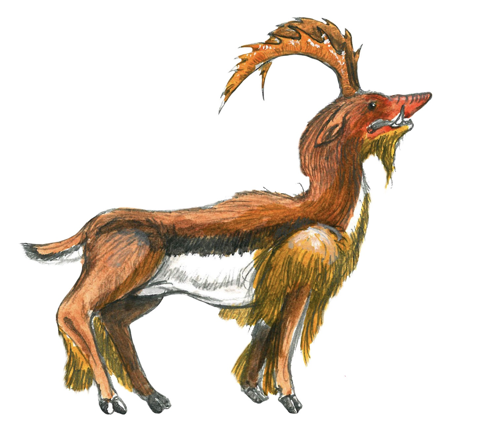
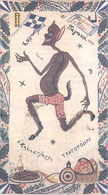
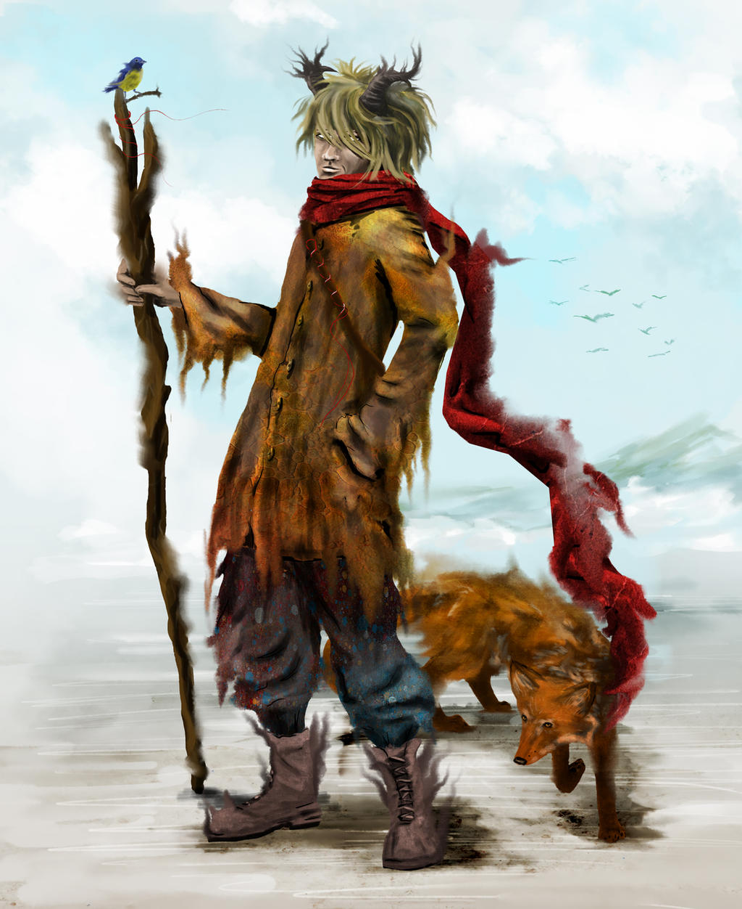

Calopus (also known as a Chatloup or an Aptaleon)

This intriguing creature was known to the Greeks as an Analopos and a Calopus (meaning "pretty foot") to the Romans. Almost as tall as an average human, a calopus is said to have many different appearances from resembling a roe deer to having features of a wolf, a boar, a feral cat and a reptile; some sources even added porcupine quills, a goat's beard or short legs. The most consistent and known feature of this creature was its large saw-toothed (or ram-like) horns which are able to shred off human limbs or ram a tree down. They're believed to inhabit India, Syria, and the Euphrates basin which is located in regions of Turkey, Iraq and Syria. The rarity of these beautiful creatures is said to be the responsible of Alexander the Great who encountered some in India. Though tough were their horns against their shields, these creatures were no match for Alexander's soldiers, and as a result they slaughtered hundreds of thousands of these animals. Further mentions of the Calopus also date back to the time of the Babylonians, and its appearance was sometimes used for symbolic purposes in the Middle Ages such as when granting armorial insignias.
Bichura

The Bichura is a house spirit that seems to forewarn bad omens include ones of death. It's tradition in Tatar Turkic folklore to live in every house and able to shapeshift into a cat, a dog, or a human wearing a dress. These spirits warn the members of the household of danger by pulling on their hair or making a moaning or howling noise. For instance, specifically hearing it cry forewarns a death in the family. Spotting it is a warning of death ahead. The tricky thing about this spirit is it can grow discontent which will lead it to play tricks such as rattling small objects, breaking dishes, leaving muddy footprints, cause creaking in the walls and knocking on pots. The household members would then need to figure out what is wrong and fix it in order for the bichura to be at ease again. If the members aren't able to do so, they can rectify the situation. Luckily, living with a Bichuras is usually fine as they're mostly harmless; some sources say they even do housework.
Basty

With its name derived from the Turkic word kara-basty which means "black pressure", a Basty is a spirit or a goblin of nightmares that sits on sleeping people and bring them bad dreams. A Basty often targets females and sits on their chests. They become heavier until their weight awakens their victims at which point the victim is unable to move, forced to experience the horrible nightmares which can be sometimes be lucid dreams. A Basty is known for its shapeshifting abilites, able to change into a cat, dog, snake or a fox. In addition, they're able to fly or run like a horse. Some say a Basty could take form as a beautiful woman who visit men in their dreams and torture them with desire; this would ultimately leave them getting drained of life more and more with each visit. In addition, some Basty beieved to enter the bedroom through a keyhole and strangle their victims instead of giving nightmares. A method that could be used to keep the creatures away would be laying a knife or some iron or steel items under a pillow. There are different types of Basty in regions of Anatolia (also known as Asia Minor, a peninsula of land that's the westernmost protrusion of Asia). These types include an Al-basty, a Kara-basty, a Kul-basty and a Sary-basty.
Irshi

An Irshi is basically a fairy-like spirit, winged and radient. They are known for having magical abilities and their kind and gentle nature. They're depicted as what you'd picture as a typical pretty female fairy: youthful, beautiful, and elegant while experts in the art of dancing. In addition, these creatures are unable to lie and are said to have shape-shifting powers; this is somewhat a result of various animals being described as Irshi. In some tales, these spirits are actually described as fairies with magical powers and act as mentors for humans. Other tales tell of Irshi protecting a Tigin (a prince) or Begüm (a princess). However, despite being known for being gentle and sweet, other tales regarded them as a hidden species, demons, spirits of the dead or descendants of fallen angels. In these kinds of tales, Irshi are known for possessing fiery eyes and only appearing at night or in the evening. They are also prone to kidnapping babies and leaving changlings in their place; they're sometimes prone to kidnapping young men and women as well.
Karakoncolos

Khyrtyq

Archura

sources:
List of Turkic Mythological Creatures - travelnhistory.com List of Turkic Mythological Creatures - fairychamber.com Calopus - abookofcreatures.comCalopus - non-aliencreatures.fandom.com
Calopus - cryptidz.fandom.com
Bichura - en.google-info.org
Basty - en.wikipedia.org
Irshi - fairychamber.com
Irshi - en.wikipedia.org